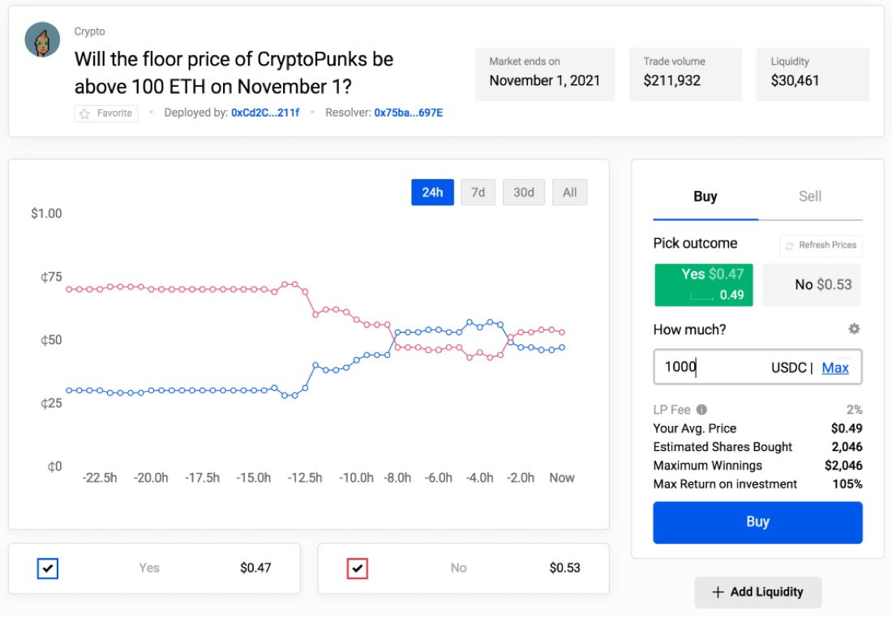

NFT derivatives
If you do not want to or cannot buy a whole share in the financial world, certain brokers also offer fractional shares.
Are fractional shares also available for non-fungible tokens (NFT)?
In the financial world, if you bet on rising prices, you buy the corresponding asset. This can then be sold later at a profit. The opposite is equally possible. Betting on falling prices is called short selling. In simple terms, one borrows assets and sells them in the hope of being able to buy them back at a lower price before the return date (margin trading). If you borrow more assets than you actually have available as capital, this is called a leverage trade. Possible profits and losses are multiplied accordingly.
Are short positions also available for Non-Fungible Tokens (NFT)?
The details from this article complement the main article: → Buy NFT
In this article, therefore, we want to look at…
- How to acquire shares in a high-priced NFT with little capital investment.
- How to bet on falling prices on an NFT.
Fractionated NFT

Only few people have the capital necessary to invest in a famous NFT project like the Crypto Punks or the Bored Apes. And even if the necessary capital could be raised: Every portfolio should be diversified. An extremely high-priced NFT stands in the way of that. So how is it possible to participate on the growth of value? You need a fraction of something that is actually indivisible. However, it is technically impossible to split an NFT. But of course, the crypto world has long since found a way around indivisibility: fractional NFT (F-NFT).
Token from Fractional
This service is offered among others by fractional.art . The owner of an NFT can lock his non-fungible ERC-721 token in the protocol and have any number of fungible ERC-20 tokens generated in exchange. The owner can now deposit these fractions as collateral for a loan, among other things. He can also offer all or part of the tokens on decentralized exchanges such as UniSwap or SushiSwap. Anyone can now purchase the desired number of tokens through the exchanges. Fractionating an NFT allows for more flexible pricing and solves the liquidity problems associated with NFTs. If you want to buy or sell a high-priced unique item, you always have to wait some time until a trading partner is found. With Automated Market Makers (AMM) such as UniSwap or SushiSwap, on the other hand, a swap is possible at any time. You’ll find an overview of many high-priced, fractional NFTs in this list. At this point, we don’t want to give investment advice, but many NFT investors would say that the price of Crypto Punks has only known one direction in the long run so far….
Token from NFTX
However, fractionation is not limited to individual NFTs. Fractional also offers the possibility to fractionate a group of NFT together. However, individual NFTs cannot be added later, nor can individual NFTs be removed from the group later. This is where the service of nftx.io offers a kind of “NFT fund”. At the heart of NFTX are the “vaults” where you can lock up NFTs and get a fungible “vToken” in exchange for each NFT. A vault can accept all NFT of a collection (e.g. all punks) or only a selection from a collection (e.g. all female punks). It’s important to know that you can redeem a specific NFT at any time with a matching vToken + fee. For example, if you have a not very rare/cheaper NFT in your portfolio and you discover a rarer/higher priced NFT in the vault, you can exchange them for each other, taking into account a fee. The vTokens are in turn tradable on SushiSwap for ETH. The NFTX interface simplifies the intermediate step via the stock exchange. The whole “trade my ETH for a locked NFT” operation is shown as a single buy operation. The opposite “locking up my NFT for ETH” is presented as selling. The ability to put in & take out NFT, as well as the price determination on the SushiSwap exchange, brings the price per NFT helps determine the “floor price” better than on OpenSea. This also means that over time the market has determined all NFTs in the vault to be the most favorable NFTs available in a collection. You can find an overview with all issued vTokens in this list.
Example: We own an NFT from a premium collection and believe the floor price will correct soon. We therefore want to sell it in time, and initially post the NFT on OpenSea at the price we had hoped for. There is no buyer there willing to pay our price. Now we can check the price at NFTX. If there is a suitable pool and the price corresponds to our own expectations, we lock the NFT in it. We then sell the minted vTokens on Sushiswap. This lowers the price of the other vTokens and appropriate pricing towards the floor price is facilitated. On the other hand, if we believe that the floor price will rise soon, we invest in the corresponding vToken. We can now either hold that vToken directly or use an entire vToken (plus the extra fee, usually 5%, for a total of 1.05 vTokens) to redeem an NFT and sell it on OpenSea.
Is there margin trading on fractional NFT?
If the liquidity is high enough – and the respective crypto exchange offers the feature – then coins and fungible tokens can be easily traded on crypto exchanges as margin trades with and without leverage. Well known exchanges that support this are Binance, FTX, Bitfinex, Kraken, KuCoin and many more. With non-fungible tokens this does not work in principle. Liquidity (quantity 1) prevents any form of long or short position by another party. Forward contracts for individual NFTs cannot be formed either, the price is far too stable for that. Pricing always occurs only through an actual sale, with sales rarely if ever taking place.
To the best of our knowledge, there is currently no market in which one can execute margin trading with fractional NFTs. However, this is only a matter of time before a corresponding trading venue opens up on one of the decentralized exchanges such as Perpetual Protocol, dYdX, Fulcrum or one of the other competitors. Feel free to email us at t|e|a|m|@|h|a|u|s|h|o|p|p|e|.|d|e| if you know of an appropriate marketplace.
Floor Price markets
Nevertheless, is there a current opportunity to bet on falling prices? Yes, there is. It is possible to place bets on Polymarket for floor prices. Polymarket is an information market platform on the Ethereum-compatible sidechain Polygon, where you can trade the most discussed topics (e.g. coronavirus, politics, current events, etc.). The principle is always the same: a question is asked which can be answered with “yes” or “no”. At the beginning, the “Yes” and the “No” shares are each at $0.50. If more market participants are of the opinion that the final answer to the question is “yes”, the more “yes” shares they acquire. The price for a “yes” share rises accordingly. The price for a “no” vote decreases accordingly. The lower the price of a share, the higher the expected profit. This creates an incentive to bet against the majority opinion. Once the final answer to the question is known, the market dissolves. The correct shares are then worth $1.00, while the incorrect shares have no value. If you own shares with the right result, you can exchange them back for the stablecoin USDC.

Conclusion
As the popularity and market capitalization of Non-Fungible Tokens (NFT) continues to grow, the tools continue to evolve. To participate in the performance of a high priced NFT, one can bet on fractional NFT. It is also possible to invest in shares in a pool of NFTs. If you want to bet on rising or falling floor prices, you can bet on an information market.
You want to know more about NFT? Continue reading the main article: → Buy NFT
About the author

Johannes made his first bitcoin transaction in 2013. He has been fascinated by cryptography and the cypherpunk ethos ever since. He is a cypherpunk at heart, which is why pretty much everything he builds, like ordpool.space, is open source and free.
More in this series
Buy NFTs - the complete guide
The long one. Wallets, marketplaces, what a token actually is, and three different reasons people buy.
Background knowledge on blockchain tokens
What sits underneath: token standards, and what fungible and non-fungible really mean.
Analyze and evaluate NFT
How to look at a collection before buying into it, and which risks are worth checking.
On Cyber galleries and Collabs
A walkthrough of the gallery software The Angels' Wing was built on, written with CasperB.